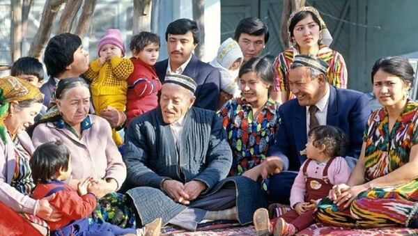
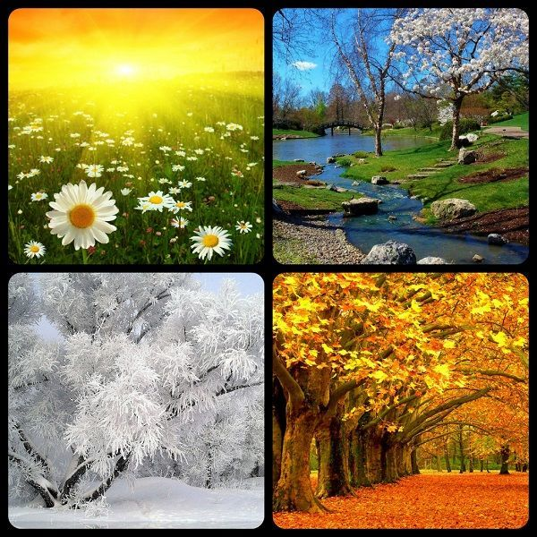
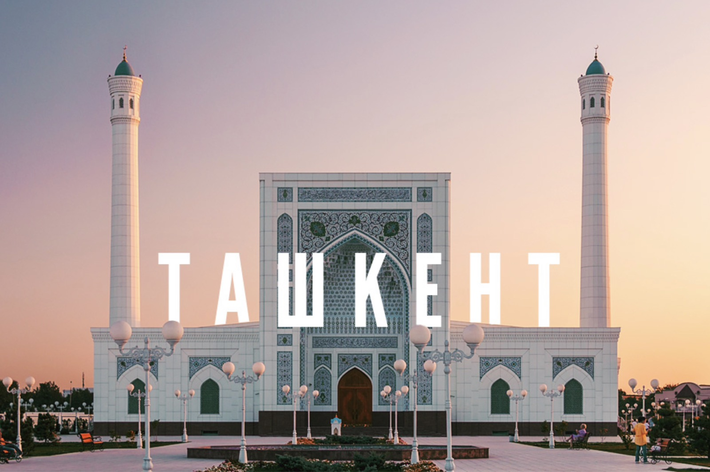
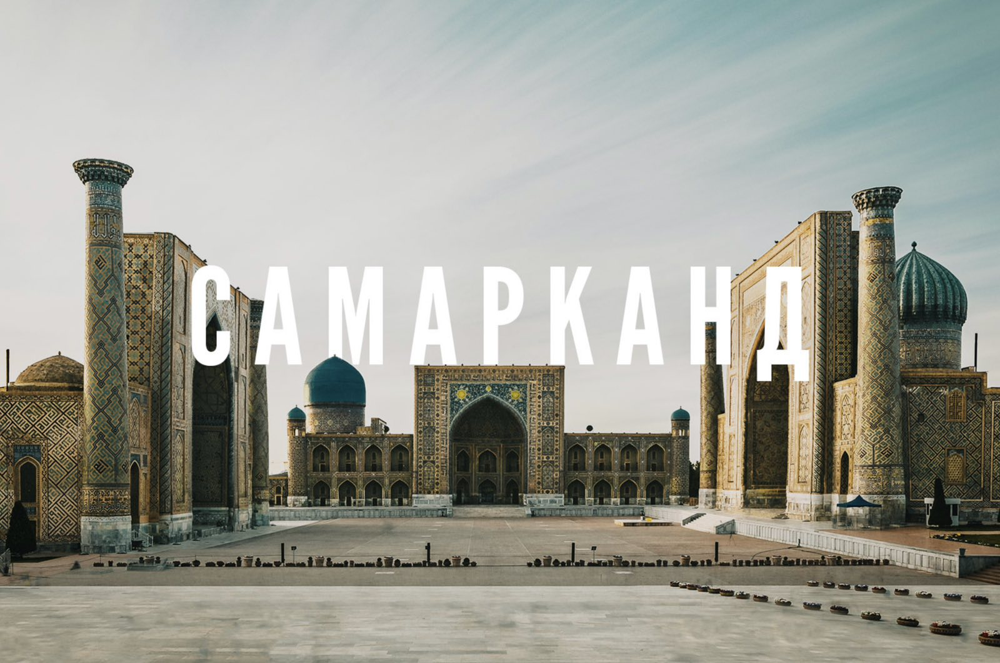

Інформація про країну та її особливості
Розташування
Узбекистан розташований в центральній частині Середньої Азії. На сході межує з Киргизстаном, на північному сході, півночі і північному заході з Казахстаном, на південно-заході і півдні з Туркменістаном, на півдні з Афганістаном і на південному сході з Таджикистаном. Загальна довжина кордонів - близько 5300 км. Крайня північна точка Узбекистану знаходиться на північному сході плато Устюрт, південна - біля міста Термез на березі Амудар'ї, західна - на плато Устюрт, східна - на сході Ферганської долини.
Загальні факти
Офіційна назва країни: Республіка Узбекистан
Столиця: місто Ташкент
Площа: 447,4 тис. км2.
Політичний устрій: Демократична держава
Чисельність населення: 32,1 млн. чоловік
Чисельність працездатного населення: 60,5% від загального населення
Середній віковий показник: 28,5 років.
Державна мова: збецька мова
Президент: Шавкат Мірзійоєв Міромоновіч
Грошова одиниця: Узбецький сум
Рух транспорту: Правобічне
Узбекистан - багатонаціональна країна. Основну частину населення складають узбеки (більше 71%).
Населення
В Узбекистані проживають представники і інших тюркомовних народів: казахи, киргизи, туркмени, уйгури, а також татари. Крім цього в республіці є велика громада таджиків, що говорять іранською мовою (4,7%). Помітну частину населення становлять росіяни і російськомовні народи, загальна чисельність яких - близько 16% всього населення республіки. Тут живуть також корейці, араби, середньоазіатські цигани і євреї, німці та багато інших. Населення Узбекистану збільшується швидкими темпами
Клімат
Клімат Узбекистану класифікується як континентальний, з жарким літом та прохолодною зимою. Південна частина країни є найтеплішим, а північна частина є найхолоднішою. Влітку температура часто перевершує 41° C, навіть може досягати 45 ° C і вище. Вологість повітря не висока. Зимова температура в середньому близько -8 °, але може впасти до -40 ° C. Велика частина країни також досить посушлива, з середньорічною кількостю опадів в розмірі від 100 і 200, міліметрах і відбувається в основному взимку і навесні.
Найкращий час для поїздки до Узбекистану Узбекистан має різні кліматичні умови в пустелях, долинах і горах, і тому може бути цікавим для подорожей цілий рік. Звичайно, весна та осінь з більш м'якими температурами та красивими фарбами природи приваблюють більше туристів, але у кожного сезону є свої переваги:
Зима в Узбекистані ідеально підійде любителям гірськолижних курортів, які розташовані за кілька годин їзди від Ташкента. У безлюдній частині країни малосніжно. Взимку мало туристів, і готель коштуватиме дешевше.
Літо в Узбекистані дуже спекотне, часом до +45? Тому це туристичне міжсезоння і можна заощадити на проживання. На екскурсії в цей період краще ходити рано-вранці, або ввечері.
Весна – чудова пора для подорожі Узбекистаном. Країна потопає у квітах та зелені, а погода приємна для прогулянок. У цей час відбувається свято весни – Навруз, а також кілька інших яскравих свят та фестивалів. У цей час року в Узбекистані починається туристичний сезон і туристів вже багато.
Осінь в Узбекистані – золота пора для туризму. По всій країні панує приємна сонячна, і в той же час прохолодна погода, ринки дивують різноманітністю найсмачніших овочів та фруктів. Тільки ближче до листопада у передгірних районах стає холодно, як узимку. Осінь – чудовий час для поїздки до Узбекистану, але й найдорожчий.
Міста
Ташкент – столиця Узбекистану. Він відрізняється від інших міст країни особливим розмахом та широкими вулицями. У місті є багато затишних парків, музеїв, є кілька історичних пам'яток. Скільки днів потрібно на огляд? 1-2 дні Основні пам'ятки: ташкентське метро, базар Чорсу, площа Аміра Темура Куди можна з'їздити: у квартали Старого міста, на ринок Янгіабад, або за межі міста, Чимганські гори.
Самарканд – один із головних туристичних центрів країни з монументальною архітектурою доби Тамерлана. Скільки днів потрібно на огляд? 2-3 дні, з урахуванням поїздки в Шахрісабз, на Батьківщину Тимура Основні пам'ятки: ансамбль Регістан, мавзолей Гур-Емір, некрополь Шахі-Зінда Куди можна з'їздити: на паперову фабрику Мерос, до печери Хазрата Дауда, у Шахрісабз
Прибуття в Узбекистан
Віза до Узбекистану.
Завдяки пом'якшенню візової політики здійснити поїздку до Узбекистану тепер дуже просто! Громадяни кількох
країн СНД можуть в'їжджати без візи терміном до 60 днів. А на строк до 30 днів до Узбекистану можуть
приїжджати без візи громадяни майже 80 країн світу.
Водночас у країні запущено онлайн-систему видачі електронних туристичних віз, яка дозволяє легко та швидко запланувати тур. А також для 30 країн доступний безвізовий транзитний в'їзд до країни до 5 днів.
Реєстрація
Кожен іноземець після прибуття до Узбекистану повинен бути зареєстрований протягом 72 годин з моменту в'їзду в країну. Якщо ви зупиняєтеся в готелі, реєстрація відбувається автоматично при реєстрації в готелі (хоча деякі недорогі готелі можуть не пропонувати таку послугу). Ваш готель надасть вам реєстраційний бланк, який потрібно зберігати в паспорті на весь період вашої поїздки, який при необхідності потрібно буде пред'являти представникам офіційних органів.
Ми не рекомендуємо вам зупинятися у приватному будинку, оскільки в даному випадку ви не зможете отримати необхідну реєстрацію у місцевому ОВІРі (Відділ віз та реєстрацій) і тому при виїзді з країни у вас можуть виникнути проблеми. При виїзді з Узбекистану на паспортному контролі ваш паспорт та термін дії візи перевірятимуться. Іноді співробітник імміграційної служби також може попросити вас показати реєстраційні бланки з готелю або місцевого ОВІРу. Тому переконайтеся, що реєстраційний бланк з готелю завжди під рукою (бажано прикріпити його до паспорта), перш ніж проходити паспортний контроль в аеропорту.
Транспорт в Узбекистані
Узбекистан розташований у серці Центральної Азії та пронизаний дорогами, пов'язаний авіарейсами з багатьма містами Європи та Азії. У Ташкент щодня прилітають літаки з різних куточків Землі, І разом з цим існує кілька популярних авіа-напрямків усередині країни.
Залізниці охоплюють практично всю територію країни, а між Ташкентом, Самаркандом та Бухарою курсує високошвидкісний поїзд Афросіаб, який дозволяє подорожувати між містами за кілька годин.
Міжміські автобусні маршрути розвинені погано, більшою популярністю користується замовлення трансферу на мінівен або приватне міжміське таксі.
Що можна і що не можна в Узбекистані
Гостинний народ Узбекистану досить лояльно та поблажливо ставиться до іноземців, які не знайомі з місцевою культурою поведінки. Проте знання культурних особливостей та норм етикету дозволить продемонструвати повагу до жителів країни та встановити дружні стосунки під час подорожі Узбекистаном.
В УЗБЕКИСТАНІ РЕКОМЕНДУЄМО:
Знімати взуття перед тим, як увійти до мечеті чи житлового будинку. Виявляти повагу до старших, надаючи їм найкращі місця у транспорті та за обіднім столом, допомагаючи на сходах, або пропускаючи вперед. Приносити гостинець, якщо збираєтеся залишитися на обід або на ніч у гостях у місцевих жителів. Уточнювати ціни у таксистів перед тим, як сісти в машину, щоб не платити більше, ніж ви розраховували. Стежити за дорогою під час пішої прогулянки, оскільки асфальт може бути з ямами.
В УЗБЕКІСТАНІ НЕ РЕКОМЕНДУЄМО:
Залишати хліб на землі, тому що хліб вважається священним. Гучно сморкатися на публіці, оскільки це вважається грубістю. Дуже голосно говорити у громадських місцях, особливо біля релігійних пам'яток. Соромитися, якщо ви потребуєте допомоги або якщо у вас виникли якісь питання. Більшість місцевих жителів буде рада вам допомогти і поспілкуватися.